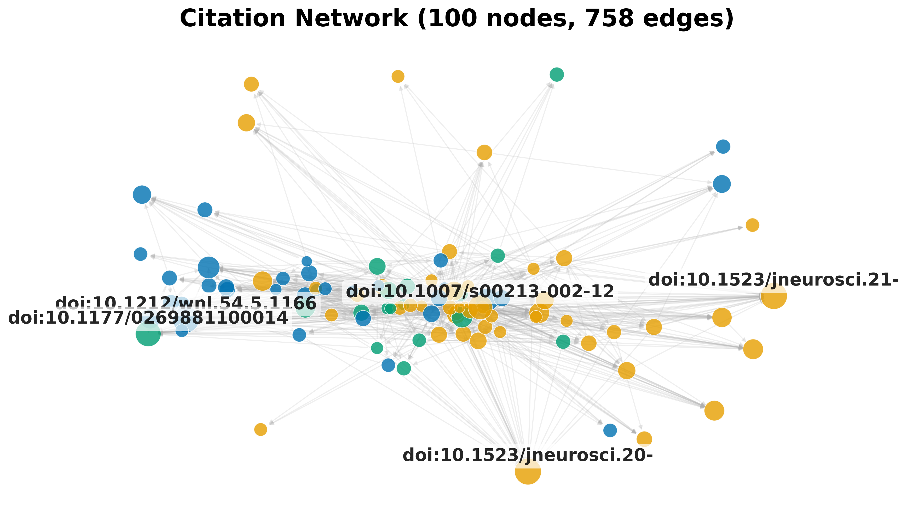
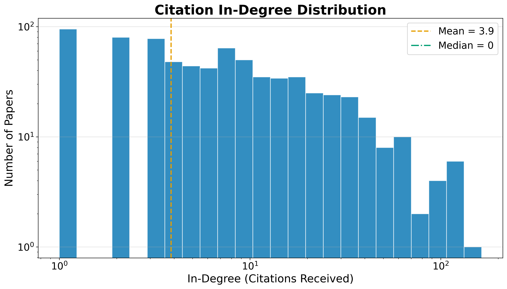

Results: Citation Network
RQ4: Citation Geometry
Resolving each record’s references against the corpus yields an intra-corpus citation graph (built and analyzed with NetworkX [hagberg2008exploring]) of 2234 nodes and 8,623 edges across 1409 connected components, with a graph density of 0.17% and a mean in-degree of 3.9. Of 38,489 total outgoing references, 22.4% resolve to another record inside the corpus — a resolution rate that reflects how self-contained the retrieved slice of the literature is rather than the underlying citation density of any single work.
The citation network has 1416 communities (detected by modularity optimization), a maximum in-degree of 163 (the most-cited paper within the corpus), and a maximum out-degree of 143 (the paper that cites the most other corpus members).
Centrality Analysis
Centrality scores (PageRank [page1999pagerank] and HITS) and modularity-based community detection [clauset2004finding] are rounded and ranked with a stable tiebreaker so the reported hub and authority rankings are byte-reproducible across runs despite the floating-point non-associativity of the underlying iterative solvers.
Table 4. Top 5 papers by PageRank.
| Rank | DOI | PageRank |
|---|---|---|
| 1 | 10.1177/026988110001400107 | 0.036943 |
| 2 | 10.1212/wnl.54.5.1166 | 0.026949 |
| 3 | 10.1523/jneurosci.21-05-01787.2001 | 0.013668 |
| 4 | 10.1523/jneurosci.20-22-08620.2000 | 0.011349 |
| 5 | 10.4088/jcp.v61n0510 | 0.008136 |
Table 5. Top 5 authority papers (HITS).
| Rank | DOI | Authority |
|---|---|---|
| 1 | 10.1038/sj.npp.1301534 | 0.017700 |
| 2 | 10.1007/s00213-002-1250-8 | 0.016311 |
| 3 | 10.1124/jpet.106.106583 | 0.015144 |
| 4 | 10.1523/jneurosci.21-05-01787.2001 | 0.014734 |
| 5 | 10.1001/jama.2009.351 | 0.014481 |
Table 6. Top 5 hub papers (HITS).
| Rank | DOI | Hub |
|---|---|---|
| 1 | 10.3389/fnins.2021.656475 | 0.011968 |
| 2 | 10.1016/bs.apha.2023.10.006 | 0.011596 |
| 3 | 10.1038/sj.npp.1301534 | 0.010886 |
| 4 | 10.1080/08897077.2019.1700584 | 0.010562 |
| 5 | 10.1007/s00213-013-3232-4 | 0.009896 |
The most influential paper by PageRank (DOI 10.1177/026988110001400107) is a foundational work that anchors the citation structure — its high authority score confirms it is frequently cited by other corpus members. Hub papers, which cite many other corpus members, serve as integrative reviews or meta-analyses that connect disparate threads of the literature.

{{#fig:citation_network}}
{{#fig:degree_distribution}}The heavy-tailed degree distribution is characteristic of citation networks: a small number of highly-cited papers anchor the structure, while the long tail of low-degree nodes represents newer or peripheral works. The low graph density (0.17%) reflects the sparsity of intra-corpus citation links — most papers cite works outside the retrieved slice, which is expected for a max-results-capped retrieval.
Advanced Network Metrics
Beyond PageRank and HITS, the network analysis computes betweenness centrality (which papers bridge different communities), closeness centrality (which papers are near all others), degree assortativity (do highly-cited papers cite other highly-cited papers?), and average clustering coefficient (how tightly knit are local neighborhoods).
The degree assortativity coefficient is -0.0598, and the average clustering coefficient is 0.1029. A negative assortativity indicates that highly-cited papers tend to cite less-cited papers (dissortative mixing), which is typical of citation networks where review papers (high in-degree) cite many primary studies (low in-degree).
Table 7. Top 5 papers by betweenness centrality.
| Rank | DOI | Betweenness |
|---|---|---|
| 1 | 10.1038/sj.npp.1301534 | 0.005234 |
| 2 | 10.4088/jcp.v67n0406 | 0.003451 |
| 3 | 10.1016/j.neuropharm.2012.07.011 | 0.002530 |
| 4 | 10.1002/14651858.cd006788.pub3 | 0.002289 |
| 5 | 10.2165/00003495-200868130-00003 | 0.001894 |
Papers with high betweenness centrality serve as bridges between different topical communities in the citation network — their removal would fragment the graph into disconnected components. These bridging papers are often review articles or methodological papers that connect disparate research threads.